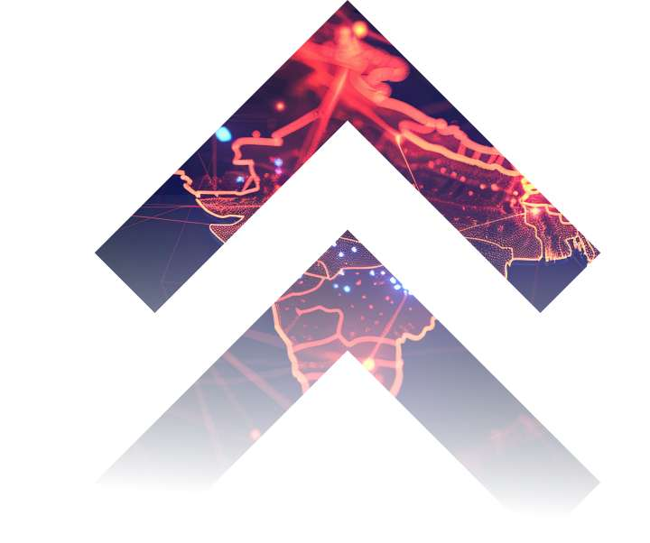

Media Capability Centres
Run all your media operations from one centre
Media Capability Centres are changing how content infrastructure works around the world, and India is leading that change. Here is what an MCC is and how we build one with you.
Start your MCC journeyThe industry shift
Why media needs a new way of operating
Viewing has gone digital and spread across devices, and old operating models can't keep pace. Broadcasters, OTT platforms and content owners face higher costs, more complexity and pressure to move faster. They need central, technology-led hubs that simplify operations and grow with them.
What is an MCC?
A Media Capability Centre is a central, cloud-based and AI-assisted hub that runs media operations end to end, including production, playout, archiving and monetisation, from one point of control.
Why India is the ideal MCC hub
A large pool of skilled people, strong digital infrastructure and lower operating costs make India the natural home for MCCs that serve media companies worldwide.

24x7 operations
Teams on shift around the clock, across time zones.
Multilingual media
Content handled in the many languages viewers speak.
Broadcast & OTT expertise
Proven experience in both linear and streaming.
Cost efficiency
Strategic savings without cutting quality.
Skandha's MCC expertise
Solutions we deliver
We design and run MCCs around your business goals, from AI-assisted workflows to hybrid cloud, so digital-first companies can grow with precision.
Content workflow & distribution
Live sports streaming & playout
Advertising & automation
Cloud infrastructure & DevOps
Your roadmap to building an MCC
Four steps from first conversation to a centre that grows with you.
Step 1
Discovery
We review your goals and your media landscape.
Step 2
Design
A modular MCC architecture drawn up for you.
Step 3
Deploy
AI-led, cloud-based systems put into service.
Step 4
Scale
More capabilities, more automation, more markets.
Ready for operations that scale?
Talk to us about a Media Capability Centre built for your channels, platforms and markets.
Cloud, playout and ad operations for broadcasters, OTT platforms and rights holders, run from Mumbai since 2013.
LinkedInServices
Digital first servicesAI/ML for mediaCustomized solutionsDigital sports operationsManaged media fabricvidREGlobal offices
Mumbai office: B206/309, Everest Grande, Mahakali Caves Road, Andheri (E), Mumbai 400093
Dubai office: DSP-HQSOU-VD-F14-035, Fourteenth Floor, Dubai Science Park, South Tower, Dubai Internet City, UAE
+91 22 62040500© 2026 Skandha Media Services Pvt Ltd.
Terms & Conditions and Privacy Policy on request · ISO 27001:2022 certified